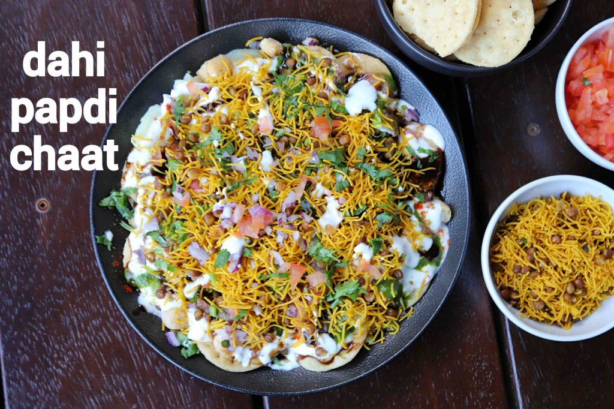

Dahi Papdi Chaat

Description
A popular North Indian chaat recipe known for its sweet, sour and
spicy taste. It is a yogurt based chaat recipe made with deep-fried
flat puri and chaat chutneys.
Ingredients
- 13 papdi
- 3 tablespoons potato
- 3 tablespoons chickpea
- 3 tablespoons onion
- 5 tablespoons curd
- 3 teaspoons green chutney
- 3 teaspoons tamarind chutney
- Pinch of chili powder
- Pinch of cumin powder
- Pinch of chaat masala
- Pinch of salt
- 1 tablespoon tomato
- 3 tablespoons sev
- 1 teaspoon coriander
Steps
- Set papdi in a serving plate. Top with 3 tablespoons of potato
and 3 tablespoons of chickpeas.
- Sprinkle 2 tablespoon chopped onions on top and drizzle 3 tablespoons
of curd over it.
- Add 2 teaspoons of green chutney and 2 teaspoons of tamarind
chutney.
- Sprinkle chili powder, cumin powder, chaat masala, and salt.
Once again add 1 tablespoon of onions and 1 tablespoon of tomatos.
- Add 1 tablespoon curd, 1 teaspoon green chutney, and 1 teaspoon
tamarind chutney.
- Top with 3 tablespoons sev and garnish with 1 teaspoon of coriander.